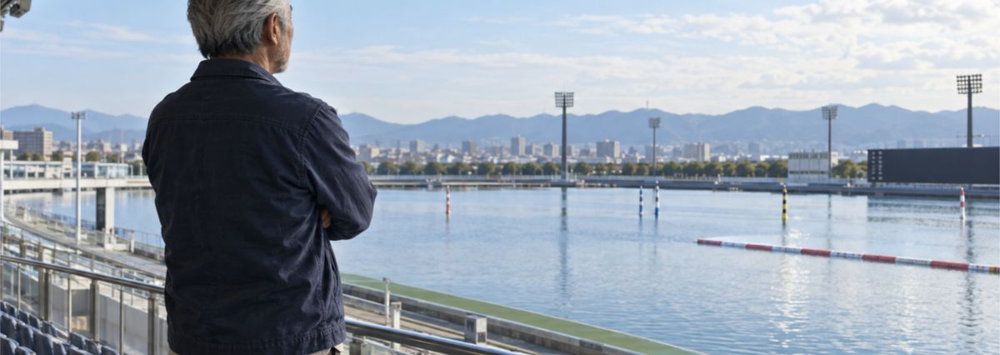
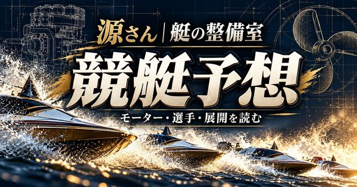

競艇の予想クリエイター
Gen
競艇（ボートレース）予想
プロフィール
源さんだ。競艇は勝率・ST・モーター・進入・展示を一つずつ見て、三連単を組み立てる。派手な煽りより、狙いと不安材料まで正直に伝えるのが俺のやり方だ。
人気の記事

最新の記事
- 2026-11-08的中結果報告
 競艇予想｜2026/11/08 江戸川 12R｜源さんの一戦点検
競艇予想｜2026/11/08 江戸川 12R｜源さんの一戦点検  競艇予想｜2026/11/08 唐津 12R｜源さんの一戦点検
競艇予想｜2026/11/08 唐津 12R｜源さんの一戦点検  競艇予想｜2026/11/08 江戸川 11R｜源さんの一戦点検
競艇予想｜2026/11/08 江戸川 11R｜源さんの一戦点検  競艇予想｜2026/11/08 唐津 11R｜源さんの一戦点検
競艇予想｜2026/11/08 唐津 11R｜源さんの一戦点検  競艇予想｜2026/11/08 江戸川 6R｜源さんの一戦点検
競艇予想｜2026/11/08 江戸川 6R｜源さんの一戦点検  競艇予想｜2026/11/08 唐津 9R｜源さんの一戦点検
競艇予想｜2026/11/08 唐津 9R｜源さんの一戦点検  競艇予想｜2026/11/08 江戸川 5R｜源さんの一戦点検
競艇予想｜2026/11/08 江戸川 5R｜源さんの一戦点検  【的中結果】競艇予想｜2026/11/08 唐津 7R｜源さんの一戦点検【無料公開】
【的中結果】競艇予想｜2026/11/08 唐津 7R｜源さんの一戦点検【無料公開】 
競艇予想｜2026/11/08 江戸川 2R｜源さんの一戦点検